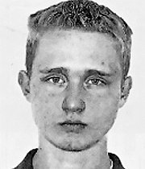

Фото из материалов уголовного дела
Никита Воронов родился в 1999 году в городе Кириши в состоятельной семье. Его дед, Валентин Филатов, был успешным топ-менеджером нефтеперерабатывающего завода «Кинеф» и почетным гражданином города[reference:0]. В 2018 году Филатова не стало, и все свое состояние он завещал любимому внуку. К тому времени Воронов успел закончить школу и поступить в вуз, но, проучившись пару семестров, бросил учебу[reference:1].
Путь от ночного клуба до наркоторговли
Вместо спокойной жизни наследник решил заняться бизнесом. Он основал фирму «Фаворит-Альянс», а в 2015 году вместе с женой Еленой (она была старше него на 12 лет) арендовал бизнес-центр и открыл ночной клуб Imperial[reference:2]. Два года спустя клуб прогорел, и Вороновы остались должны владельцу бизнес-центра 1,3 миллиона рублей за аренду[reference:3].
Неудача не смутила Никиту — он открыл таксопарк, куда позвал работать своего друга детства Дмитрия Говорушкина. В отличие от Воронова, у Говорушкина не было богатых родственников: он с отличием закончил педагогический вуз, женился, но так и не смог найти нормальную работу[reference:4]. Работа в таксопарке также оказалась не особо прибыльной — и тогда его владелец внезапно решил попробовать себя в наркоторговле[reference:5].
«Придет полиция — бегите»
Подельники задумали готовить наркотик альфа-PVP, больше известный в России как «соль». Руководителем производства Воронов назначил Говорушкина, а сбыт поручил своему 25-летнему другу Станиславу Мохову[reference:6]. Вскоре производство перенесли в цех побольше, а затем пришли к мысли оборудовать полноценную лабораторию в промышленных масштабах.
Идеальным местом оказался просторный ангар в поселке Обуховец, расположенном в 30 километрах от города Тосно. Пустующее помещение, которое подельники купили за 400 тысяч рублей, ранее принадлежало Обуховскому оборонному заводу: во времена СССР там делали огромные поддоны для ракет[reference:7]. Поселок в лесу, ангар за забором — с улицы не видно ничего.
Для ангара подельники купили огромный контейнер, грузовые рефрижераторы, автопогрузчик, химический реактор и пять промышленных миксеров, высота одного из которых составляла 3,5 метра. Часть компонентов приобрели легально, недостающее — в даркнете на маркетплейсе «Гидра»[reference:8]. Воронов дал подельникам четкую инструкцию: «Если на территорию влезут местные жители, гнать под любым предлогом». На вопрос «А если придут полицейские?» он ответил: «Придет полиция — бегите»[reference:9].
«Я бы сказал, что это выглядело как песочница. В другой части цеха стояли коробки с готовым товаром: вес всей найденной в ангаре "соли" составил около восьми тонн».
Случайная развязка
20 ноября 2019 года участковый Дмитрий Петров делал обход территории. Он искал нелегальных мигрантов и угонщиков машин и решил заглянуть в большой ангар на окраине поселка[reference:10]. Едва завидев идущего полицейского, находившиеся там Говорушкин, Сурнаков и Каменев бросились бежать, даже не заперев дверь[reference:11].
Вошедший капитан Петров увидел настоящую лабораторию с химическим реактором и промышленными миксерами. На полу на расстеленных клеенках сушилось какое-то вещество, причем в огромном количестве[reference:12]. Вес всей найденной «соли» составил около восьми тонн — крупнее этой партии в России на тот момент еще не изымали[reference:13]. Ее приблизительная стоимость составила около семи миллиардов рублей. Кроме того, следователи изъяли около 80 тонн прекурсоров, которых хватило бы для изготовления еще семи тонн готового вещества[reference:14].
Ночью туда приехал источник «Ленты.ру»: «Горло першит, слезы текут — невозможно находиться. Наркотик собирали совковыми лопатами. Смеялись, ведь обычное изъятие — это 50-100 граммов. Конечно, мы никогда не видели такого масштаба. Работали там двое суток без сна»[reference:15].
Правосудие присяжных
Осмотрев брошенные у ангара машины, оперативники нашли документы и телефоны, по которым быстро вычислили подозреваемых. Говорушкина и Сурнакова задержали спустя пару часов, а Каменев некоторое время скрывался в лесу, но сильно замерз и сам пошел сдаваться[reference:16]. Никита Воронов вместе с Моховым успели добраться до Белоруссии, но были задержаны в аэропорту Минска при регистрации на рейс в Грузию[reference:17].
Единственным, кто согласился сотрудничать со следствием, стал Дмитрий Говорушкин. По его версии, Воронов солгал ему, что тот якобы будет заниматься производством химических препаратов для промывки газового оборудования. Говорушкин понял, что к чему, слишком поздно[reference:18]. За активное содействие следствию в 2022 году он получил сравнительно мягкий приговор: восемь лет лишения свободы[reference:19].
Остальные обвиняемые попросили суд присяжных и, как могли, пытались разжалобить их. Адвокаты Воронова упирали на то, что у него на иждивении были трое маленьких детей, а также больные жена и бабушка. Защитники Мохова говорили про его маленького ребенка и больную жену, Каменева — про слепого брата, Сурнакова — про больную мать. Причем все обвиняемые утверждали, что оказались обманом вовлечены в наркобизнес[reference:20].
Впрочем, присяжные все равно признали всех четверых виновными. В марте 2023 года Ленинградский облсуд приговорил Сурнакова и Каменева к 17 годам колонии, а Мохова, признанного правой рукой главаря, — к 20[reference:21]. Создатель нарколаборатории-рекордсмена 27-летний Никита Воронов получил пожизненный срок[reference:22].
Это дело стало одним из самых громких в современной России: масштаб производства поразил даже опытных оперативников, а разоблачение произошло благодаря банальной случайности.